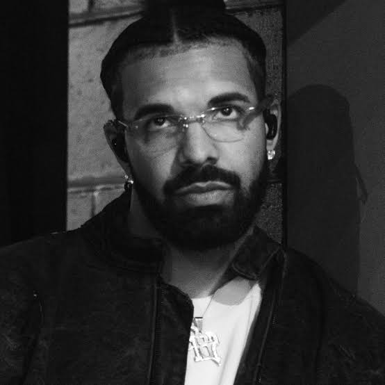

Drake, l'empire et la fatigue
Pendant plus de dix ans, il a tout gagné : les charts, les records, les tubes de l'été. Mais que se passe-t-il quand on reste au sommet si longtemps que le monde attend seulement de vous voir tomber ?

La domination totale
Drake n'a pas juste eu du succès : il a redéfini ce qu'il voulait dire. Il a mélangé rap et chant, mélancolie et arrogance, confidences et punchlines, jusqu'à ce que tout le monde l'imite. Une décennie entière de musique porte son empreinte, qu'on l'aime ou non. On ne compte plus les artistes qui existent grâce à la porte qu'il a ouverte.
Avant lui, on choisissait son camp : rappeur ou chanteur, dur ou sensible, rue ou radio. Drake a fait sauter ces frontières. Il a prouvé qu'on pouvait pleurer sur un couplet et dominer sur le suivant, et ce mélange est devenu la norme absolue du son moderne.
Cette omniprésence a un prix. À force d'être partout, tout le temps, sur chaque tube, il est devenu une cible autant qu'une référence. Dominer si longtemps finit par lasser — pas lui, mais ceux qui le regardent. On pardonne tout à celui qui monte ; on guette la moindre faiblesse de celui qui est resté trop longtemps en haut.
Le poids de l'attente
Quand on a tout réussi, chaque nouveau projet est jugé non pas pour ce qu'il est, mais pour ce qu'il n'est plus. Le vrai défi de Drake n'est plus de gagner — c'est de rester intéressant une fois que la surprise n'existe plus.
C'est une prison dorée. Sortir un bon album ne suffit plus : on attend de lui le chef-d'œuvre, la réinvention, le coup de maître. Et comme personne ne peut se réinventer tous les ans, le moindre projet « simplement bon » passe pour une déception. Le succès a relevé la barre si haut qu'il ne peut plus que décevoir.
L'usure de la domination
Toute domination finit par fatiguer ceux qui la subissent. Après des années à voir le même nom en tête de tout, le public finit par avoir soif de nouveauté, de sang neuf, de visages inédits. Ce n'est pas que Drake soit devenu moins bon : c'est que l'habitude a émoussé le désir.
Dans la musique comme ailleurs, rien ne lasse plus que ce qui gagne toujours. Les histoires qui passionnent sont celles des ascensions, des outsiders, des renversements. Un champion qui reste champion trop longtemps devient, malgré lui, le méchant du récit, celui qu'on rêve de voir détrôné.
C'est le paradoxe cruel du succès durable : plus on règne, plus on devient la cible. Drake paie aujourd'hui le prix de sa propre réussite, pris dans une lassitude collective qui n'a rien à voir avec son talent, et tout à voir avec notre besoin de nouveauté.
Le revers de l'omniprésence
À trop vouloir toucher tout le monde, on finit par diluer ce qui nous rendait unique. C'est le risque permanent d'un artiste aussi total. La quantité a fait sa puissance ; elle pourrait aussi devenir sa limite.
En voulant être sur tous les terrains à la fois — le club, la radio, la rue, les réseaux — il s'expose à n'être nulle part pleinement. Le génie de l'ubiquité peut se retourner : à force d'être l'artiste de tout le monde, on risque de n'être l'artiste de personne.
Retrouver la faim
Au fond, le vrai défi de Drake n'est ni musical ni commercial : il est intime. Après avoir tout prouvé, comment retrouver l'envie ? Comment rejouer avec la faim des débuts, cette énergie qui ne venait pas du besoin de rester numéro un, mais du simple plaisir de créer ?
C'est la question que tous les très grands finissent par affronter : que faire quand il n'y a plus rien à conquérir ? La réponse décidera de la suite. Soit il se contente de défendre son empire et s'use lentement, soit il retrouve le feu et se réinvente. Dans les deux cas, une chose est sûre : il aura marqué son époque comme peu l'ont fait.
Le plus dur, au sommet, n'est pas d'y monter — c'est d'y rester sans lasser. Et personne n'y est resté aussi longtemps que lui.